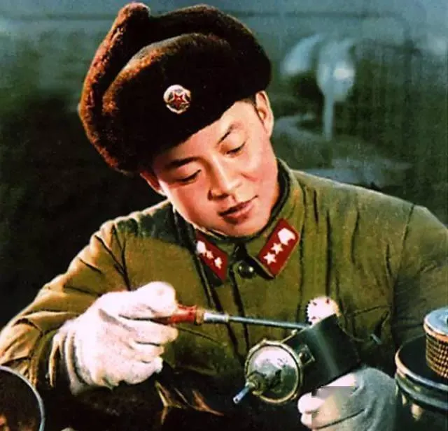
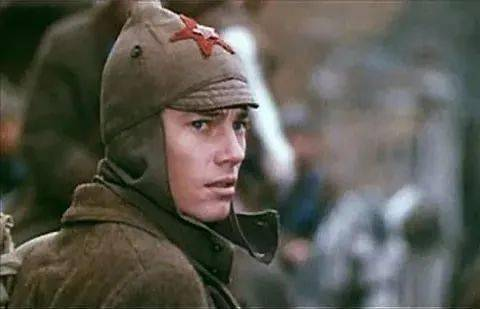
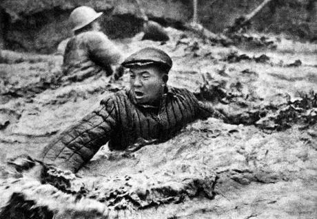
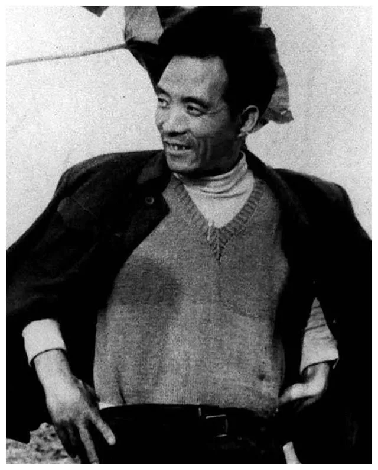
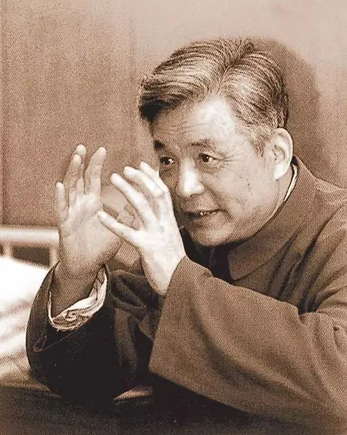
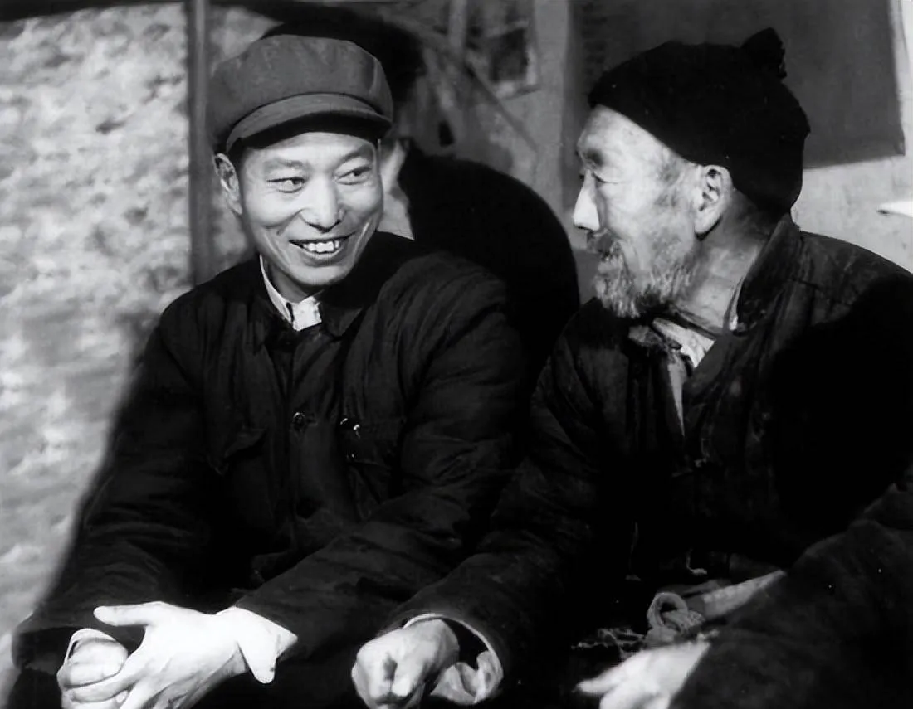

理论学习工具集
从理论基石到实践应用，从经典阅读到独立思考——系统化的马克思主义学习路线图
📐 一、哲学原理
辩证唯物主义 · 历史唯物主义 · 政治经济学 · 科学社会主义
⛏️ 马克思主义的三个组成部分
马克思主义由马克思主义哲学、马克思主义政治经济学和科学社会主义三大部分组成。哲学是其世界观和方法论基础，政治经济学是其理论论证，科学社会主义是其核心归宿。三者相互联系、不可分割。
⚖️ 一、辩证唯物主义
🔄 对立统一规律（矛盾规律）
矛盾是事物发展的根本动力。任何事物内部都包含相互对立又相互统一的两个方面。这一规律揭示了事物发展的源泉和动力。
- 矛盾的普遍性：矛盾无处不在、无时不有
- 矛盾的特殊性：不同事物的矛盾各有特点，要具体问题具体分析 → [科普]
- 主要矛盾与次要矛盾：抓关键、抓重点（"牵牛鼻子"）
- 矛盾的主要方面：决定事物的性质；矛盾双方在一定条件下转化
🌀 否定之否定规律
事物的发展是螺旋式上升的。每一次否定都不是简单的抛弃，而是扬弃——既克服又保留。前进中有曲折，曲折中前进。
🏛️ 二、历史唯物主义
⚙️ 社会基本矛盾
生产力与生产关系的矛盾、经济基础与上层建筑的矛盾，是推动人类社会发展的根本动力。
- 生产力决定生产关系，生产关系反作用于生产力
- 经济基础决定上层建筑，上层建筑反作用于经济基础 → [科普]
👥 人民群众是历史的创造者
历史不是少数英雄人物创造的，而是人民群众创造的。"人民，只有人民，才是创造世界历史的动力。"——毛泽东
📜 社会形态理论
人类社会依次经历：原始社会→奴隶社会→封建社会→资本主义社会→共产主义社会（社会主义是其第一阶段）。这是对社会发展规律的概括。
💰 三、政治经济学（新增）
💰 剩余价值理论
马克思政治经济学的核心。劳动力成为商品后，工人创造的价值超过劳动力价值的部分被资本家无偿占有。剩余价值是资本主义剥削的秘密，也是资本积累的源泉。
📈 资本积累与资本原始积累
资本家把剩余价值转化为资本，就是资本积累。资本原始积累是资本主义生产方式确立前，通过暴力剥夺小生产者形成资本的过程。
📉 资本主义经济危机
生产社会化与生产资料资本主义私有制之间的矛盾，是资本主义的基本矛盾。这一矛盾必然导致生产相对过剩的经济危机周期性地爆发。
⭐ 四、科学社会主义（新增）
⚔️ 无产阶级的历史使命
无产阶级是资本主义的掘墓人，其历史使命是推翻资本主义、建立社会主义并最终实现共产主义。《共产党宣言》指出："无产者在这个革命中失去的只是锁链，获得的将是整个世界。"
🌅 共产主义社会两个阶段
共产主义第一阶段（社会主义）实行"各尽所能、按劳分配"；高级阶段（共产主义）实行"各尽所能、按需分配"。从社会主义到共产主义需要生产力的高度发展。
🇨🇳 五、马克思主义中国化
⚔️ 中国革命三大法宝
毛泽东总结中国革命经验，提出统一战线、武装斗争、党的建设是中国革命的三大法宝。
📖 更多哲学原理内容（如范畴体系、辩证思维方法、苏联哲学史等）持续完善中……
⚔️ 二、斗争策略
化理论为实际行动——革命导师们是如何把道理变成力量的？
💡 从"知道"到"做到"
马克思主义从来不是坐而论道的学问。马克思说："哲学家们只是用不同的方式解释世界，而问题在于改变世界。"列宁说："没有革命的理论，就不会有革命的运动。"但有了理论之后呢？关键在于实践——在于如何在具体条件下灵活运用这些原理。下面通过几位榜样人物的生平，看看他们是怎么做的。

雷锋
1940—1962 · 中国人民解放军战士雷锋同志短暂的一生，是把"为人民服务"这五个字刻进骨子里的22年。他不是在喊口号——他是真的在做。出差帮列车员打扫卫生、节假日去建筑工地义务劳动、把自己省下来的钱捐给有困难的人、把战友的脏衣服悄悄拿去洗……但是，他并不是传统意义上的“老好人”。事实上，他的奉献是有阶级性的。他为同样广大工农群众、旧社会受压迫者服务，而不是为资本家、地主、官僚服务。对待同志要像春天般的温暖，对待阶级敌人要像严冬一样残酷无情，这就是雷锋精神的实质。他用实际行动回答了一个根本问题：一个怀揣理想的普通人应该怎样活着？不是学唐僧，而是做孙悟空。
当代启示：雷锋精神在不同时期有不同的阐述，但笔者认为核心思想就一个：斗志昂扬地去爱和恨，去生活去战斗

保尔·柯察金
奥斯特洛夫斯基《钢铁是怎样炼成的》· 文学形象保尔虽是文学形象，却有着作者奥斯特洛夫斯基的真实血肉——他在前线负伤、在修筑铁路时患伤寒、最后双目失明全身瘫痪。书里书外，保尔本可以凭借老资历和辉煌成绩坐吃山空，但纯粹的共产主义者是不会贪图个人的物质享受的（不像某些爱家的人）。受尽挫折苦难，仍以惊人毅力写出这部激励了全世界无数青年的作品。"钢铁是怎样炼成的？"——是在烈火和急剧冷却中炼成的。保尔告诉我们：革命的理想主义不是空想，而是面对苦难时依然选择坚持的勇气、是面对腐化仍然保持赤忱纯洁的心。
当代启示：当"躺平""摆烂"成为流行词，我想，保尔提醒我们：生命的质量不在于长度，而在于厚度。面对人与生俱来所必须面临的困境，不应选择逃避，而是选择勇敢地斗争——这种战斗精神在任何时代都不会过时。

铁人王进喜
1923—1970 · 大庆石油工人1960年，王进喜带领1205钻井队来到大庆。没有吊车？他和工人们用人力把60多吨的钻机设备运到井场并安装起来。打井需要水？他带头用脸盆端水。地层发生井喷危险时，他毫不犹豫地跳进泥浆池，用身体搅拌水泥压住井喷——这就是著名的"跳泥浆池"。王进喜代表的是一种自力更生、艰苦奋斗的精神：国家缺油，我们就自己找油；没有条件，就创造条件。
当代启示：在技术封锁和外部压力下，王进喜的"自力更生"精神尤为珍贵。从来就没有什么救世主，解决问题全要靠我们自己——这种人民主体性意识，是打破一切束缚的根本力量。

焦裕禄
1922—1964 · 兰考县委书记焦裕禄在兰考工作只有一年多，却永远留在了人民心中。面对兰考的内涝、风沙、盐碱"三害"，他没有坐在办公室听汇报，而是亲自骑着自行车跑遍全县120多个大队，绘制出详细的风沙分布图。肝癌晚期他还用藤椅顶着肝部坚持工作，直到生命的最后一刻。他诠释了什么是真正的人民公仆——不是挂在嘴上的，是用命去实践的。
当代启示：在信息爆炸却真相稀缺的今天，焦裕禄的"调查研究"仍然方法尤为重要。不被二手信息牵着鼻子走，亲自去看、去听、去感受——这是穿透迷雾、接近真相的唯一途径。

邓稼先
1924—1986 · "两弹一星"元勋邓稼先隐姓埋名28年，在戈壁荒漠中领导了中国第一颗原子弹和氢弹的理论设计；当苏联撤走专家、带走图纸时，他和同事们用算盘和手摇计算机完成了复杂的核物理计算；欧内大好汉（事物是总是有利有弊的，但这里只谈弊端）波及九院时，他挺身而出，保护科研工作正常开展；核试验中受到过量辐射后，他仍坚持工作，最终因癌症去世。他是一座沉默的丰碑——直到生命的最后时刻，他的名字才为世人所知。
当代启示：在流量为王、人人渴望曝光的时代，邓稼先提醒我们：真正的伟大往往是无声的。不是追求被看见，而是追求把事情做成——这种"功成不必在我"的境界，是最高级的斗争智慧。
陈永贵
1914—1986 · 大寨村党支部书记陈永贵带领大寨村民在"七沟八梁一面坡"的贫瘠土地上，用铁锹和扁担造出了层层梯田。1963年遭遇特大洪灾，大寨人没有接受国家救济，而是自力更生重建家园，反而向国家上缴了24万斤粮食。"自力更生、艰苦奋斗"的大寨精神，成为那个时代农业战线的旗帜。而他也成为新中国唯一一个农民总理。一个农民，用实干改变了山河，也改变了人们对贫困的认知。
当代启示：当"等靠要"成为某些人的惯性思维，陈永贵和大寨人证明：改变命运的根本力量在自己手中、在组织起来的集体手中。不是等待施舍，而是自己动手——这种主体性，是打破一切依附关系的起点。

张钦礼
1927—2004 · 兰考县委副书记张钦礼是焦裕禄的亲密战友，也是焦裕禄精神的忠实继承者。焦裕禄去世后，他接过治理兰考"三害"的重担，带领群众继续奋战。在后来的政治风波中，他因坚持实事求是而遭受花椰灯迫害，但始终没有背叛人民的利益。他是一个悲剧性的英雄——不是因为失败而悲剧，而是因为忠诚而悲剧。
当代启示：什么是检验一个人真正立场的试金石？当坚持真相需要付出代价时。
📖 更多榜样故事整理中（如白求恩、张思德、黄继光、邱少云等）
🗡️ 从这些人身上，我们能学到什么？
上面这些人物，有的在战场上出生入死，有的在荒原上改天换地，有的在实验室里默默奉献，有的在权力面前坚守立场。他们的斗争领域各不相同，但精神内核高度一致——这就是马克思主义实践观在具体历史条件中的生动体现。
🎯 斗争的第一步：认清矛盾
焦裕禄没有坐在办公室听汇报，而是跑遍了兰考的每一个大队——这是调查研究，更是对矛盾特殊性的把握。陈永贵没有照搬外面的经验，而是从大寨的实际出发——这是具体问题具体分析。当代斗争的第一步不是喊口号，而是搞清楚：我们面对的矛盾到底是什么？它的特殊性在哪里？不被表面现象迷惑，不被别人预设的框架束缚，自己去发现问题的真相。
🦾 斗争的核心：发挥主体性
王进喜说"没有条件创造条件也要上"，陈永贵用铁锹和扁担在荒坡上造出梯田，邓稼先在被封锁的条件下靠算盘完成核物理计算——他们共同的特点是拒绝被动等待。当代社会的"内卷""躺平"困境，本质上就是主体性被消解的表现。真正的斗争，首先是与自己内心的惰性、依附性和消极性作斗争，重新确立"我可以改变"的主体意识。
⚖️ 斗争的原则：站稳人民立场
雷锋一辈子做的是"小事"，但每一件小事都站在人民的立场上。焦裕禄拖着肝癌的身体依然牵挂着兰考的群众。张钦礼宁可自己受迫害，也不背叛实事求是的原则——因为他们心里装的不是自己，是人民。当代斗争中，站稳人民立场意味着：在做任何选择时，先问一句"这对大多数人有利吗？"这不是空话，这是区分正确斗争与错误斗争的根本标准。
🔥 斗争的底色：坚定的信念与韧劲
保尔在双目失明、全身瘫痪的情况下依然坚持写作。邓稼先在荒漠中隐姓埋名28年。焦裕禄用藤椅顶着肝部工作到最后一刻——他们不是因为看到了希望才坚持，而是因为坚持了才创造了希望。当代斗争中，最稀缺的不是聪明才智，而是在看不到短期回报时依然不放弃的信念。斗争是长期的、曲折的，但方向是前进的。
一句话总结
真正的斗争策略，不是学几招"技巧"，而是确立一种立场、掌握一种方法、锤炼一种意志。站稳人民的立场，用辩证唯物主义的方法分析矛盾，在实践中磨炼出钢铁般的意志——这就是马克思主义从理论到实践的闭环。这些人物的共同特点是：他们不是被动地"被时代选中"，而是主动地在自己的岗位上做出了选择。这种自觉的选择，正是当代斗争最需要的东西。
📖 三、学习与思考
上篇：分阶段推荐阅读路径 · 下篇：如何真正读进去
🗺️ 推荐阅读路径（按阶段递进）
第〇阶段：热身入门
先建立感性认知，了解马克思主义大致在说什么
💡 建议：从这里开始，不要一上来就看大部头第一阶段：夯实基础
建立马克思主义三个组成部分的基本框架
- 《共产党宣言》 —— 科学社会主义纲领性文献
- 《社会主义从空想到科学的发展》 —— 了解社会主义思想的来龙去脉
- 《帝国主义是资本主义的最高阶段》—— 理解现代资本主义的本质
第二阶段：深化哲学
深入理解辩证唯物主义和历史唯物主义
- 《反杜林论》—— 马克思主义的百科全书
- 《唯物主义和经验批判主义》—— 列宁捍卫辩证唯物主义
- 《家庭、私有制和国家的起源》—— 唯物史观的典范运用
第三阶段：中国化实践
学习马克思主义在中国的运用与发展
- 《论持久战》 —— 军事辩证法的杰作
- 《新民主主义论》 —— 中国革命的总蓝图
- 《论十大关系》—— 社会主义建设的探索
- 《关于正确处理人民内部矛盾的问题》 —— 社会主义社会的矛盾学说
第三阶段补充：军事战略与农民问题
毛泽东军事辩证法的精髓与中国革命的特殊道路
- 《中国革命战争的战略问题》 —— 军事辩证法的重要奠基
- 《抗日游击战争的战略问题》 —— 游击战的战略地位
- 《战争和战略问题》 —— 武装斗争的根本问题
- 《湖南农民运动考察报告》 —— 农民革命的伟大作用
- 《在延安文艺座谈会上的讲话》 —— 文艺为工农兵服务
- 《学习和时局》 —— 放下包袱，开动机器
第四阶段：拓展延伸
开阔视野，建立完整的知识体系
- 《怎么办？》 —— 列宁建党学说
- 《国家与革命》 —— 无产阶级专政理论
- 《论列宁主义基础》 —— 斯大林对列宁主义的系统阐述
- 《论中国革命的前途》 —— 中国革命的非资本主义道路
🤔 怎样才算真正读懂了一篇文章？（不是做题，是对话）
🎯 第一步：搞清楚——他在跟谁说话？
每篇经典著作都有明确的对话对象和针对性。《矛盾论》是针对党内教条主义者写的，《怎么办？》是针对俄国经济派写的。不知道这一点，就容易把具体论述当成抽象教条。
🔍 第二步：看结构——他的论证逻辑是什么？
不要一上来就逐字逐句抠。先通读一遍，弄清楚作者的论证脉络：提出什么问题→怎么分析的→得出什么结论。把握住了骨架，细节才不会散掉。
💬 第三步：问自己——我同意吗？为什么？
马克思主义从来不要求你盲从。读经典著作时，你可以而且应该质疑和思考：这个判断在今天还成立吗？有没有反例？如果换一个情境，结论会不会不同？批判性阅读 ≠ 不尊重经典，恰恰相反——这才是对经典的最好致敬。
🔗 第四步：联系当下——跟我有什么关系？
经典之所以是经典，是因为它提供的方法论具有超越时代的价值。读完一篇，问问自己：这篇文章的思维方法能不能用来分析今天的问题？哪怕只学到一种思维方式，也值了。
📖 更多学习方法（笔记技巧、讨论方法、写作训练等）持续完善中
🔍 四、见微知著 & 术语科普
经典语录 · 人物思想 · 历史运动 · 名词概念 · 文本背景
🧠 五、独立思考
学会辨别真伪，以正确的态度对待历史与现实
如何分辨信息真假？
互联网时代，信息鱼龙混杂。看到一些"惊人爆料"或"历史揭秘"时，先别急着转发或站队，养成几个习惯：
- 查来源：原始出处是什么？是第一手资料还是二手转述？
- 看语境：原话是在什么场合、针对什么问题说的？是否被断章取义？
- 交叉验证：其他可靠来源是否有类似记载？
- 警惕情绪操控：那些让你愤怒或恐惧的内容尤其需要冷静审视
以什么样的态度对待历史？
历史研究需要实事求是的态度。既不美化也不妖魔化，既承认成就也不回避问题：
- 放在具体历史条件下评价：不能用今天的标准苛求前人，也不能用"时代局限"替一切开脱
- 区分主流与支流：抓住历史的主流和大方向，不被个别事件或片面叙事所误导
- 尊重事实：基于史料说话，而不是预设立场后去找证据
- 理解复杂性与多面性：历史很少是非黑即白的
联系当下，解决实际问题
学习的最终目的是为了认识和改造世界。马克思主义不是博物馆里的陈列品：
- 分析现实问题的思维工具：用矛盾分析法看待社会现象，用历史唯物主义理解社会发展规律
- 树立正确的价值观：站在人民大众一边，关心劳动者权益和社会公平正义
- 保持清醒的头脑：在纷繁复杂的舆论环境中保持独立判断
- 从小事做起：不必等"大机会"——做好手头的工作、帮助身边的人，就是在践行
📖 本板块内容将持续扩充，欢迎提出你想探讨的话题
📖 未完待续 · 持续建设中
工具集各板块内容仍在持续完善与扩充中
更多案例、图表、互动功能等内容即将上线